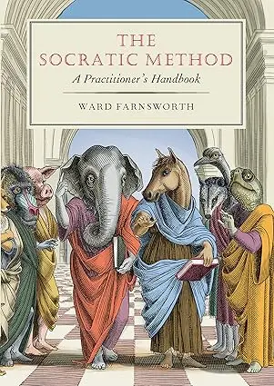
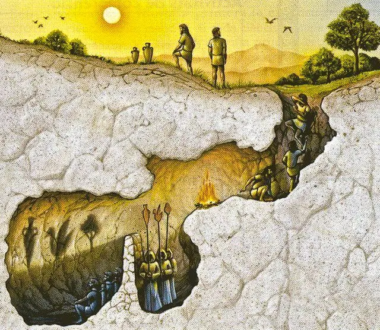

-
Parent page → “How can I improve my ability to think?” (Parent Page)
-
2025-07-04
-
I’ve just finished my first read of “The Socratic Method: A Practitioner’s Handbook”!
-
I blasted through the entire thing in 2 days, to get the initial partial understanding of the whole, before going back to learn the parts more thoroughly (Hermeneutic circle, hermeneutic spiral)
-

-
This project is currently my ~full-time focus → I’ve recently had a hard pivot in my priorities, which is a common pattern for me that points to a lack of wisdom, and this book & the Socratic method seem like really good antidotes (if I can grok the method and use it regularly! Hence treating it as a full time sprint, to front-load the learning)
-
I want to make flashcards from it, but first I thought I’d do the top-down model thing to see what I know, what I don't know, etc
- Allows me to see what I already understand, and as such, I may be able to skip making flashcards about those things, as they’ll be redundant
- Allows me to see what I’m still unsure about, so I can fill in those gaps → stuff that I’m aware of but only vaguely, and could do with proper flashcards to consolidate the knowledge
- Doesn’t allow me to highlight what I don’t remember/know, as I won’t think to write about stuff that I’ve forgotten. Useful for highlighting knowledge gaps
What is the Socratic method?
- My current model, off the top of my head
- It’s a method which is all about asking questions
- The aim is to reach truth, but really, this rarely happens, because it’s very hard to reach ground truths that can’t be refuted in some way
- The more profound “fruit” of the method is - countering your own foolishness
- Note that I think you naturally imagine using the Socratic methods to expose the foolishness of the thinking of others (e.g., you imagine Socrates deflating the pomposity of a Sophist), but I intend to use it entirely on myself, at least at first
- Realising that you don’t know what you thought you knew
- "Double ignorance" is the worst sin
- If you don’t know something but know that you don’t know it (ignorance), then at least you’re humble, and cautious.
- Whereas, if you don’t know something, and you don’t know that you don’t know it… that is, if you think you do possess a truth, when actually you are confused, then this is very dangerous
- Self-delusion w/r/t plans and priorities → acting, spending time and resources on “I will do this thing because it is the correct thing to do”, when actually it may not be
- When you realise that you were deluded, acted too quickly based on “certain” beliefs that turned out to be provisional and in need of further inspection, you pivot again — shiny object syndrome, recency bias, being too action-biased (AKA, the story of my life)
- Self-delusion w/r/t your own wisdom and knowledge: professing to know the truth, to have certainty re: xyz, when actually you’re mistaken and could be disproven. May cause you to be pompous, judgemental, superior
- Also the story of my life: “oh, this person lives in a foolish way, why don’t they do x like me, it’s so ridiculous that they do y” → the Socratic method is very humbling re: “I have a huge amount of false beliefs and contradictions, and I should clean these up myself, and have much more patience and empathy with other people”
- Self-delusion w/r/t plans and priorities → acting, spending time and resources on “I will do this thing because it is the correct thing to do”, when actually it may not be
Everything is a knowledge problem
- Socrates says that ethics/virtue comes down to a knowledge problem
- “Controversial” claim by the author:
- “Akrasia” (which I first learned about from this beeminder post and the rationality community) doesn’t actually exist
- Akrasia is when you act against your own self-interest. Having a donut when you’re on a diet, struggle to quit smoking, etc
- According to the author, Socrates would say that you can’t act against your own self-interest. All people want what is good for them, no one actively chooses what is bad for them, so you must be choosing the thing because you think it’s good for you, on net. So it’s a knowledge problem, because of e.g. hyperbolic discounting (the cigarette will provide a pleasant break now, the lung damage feels like a problem for 30-years-from-now you), etc
- This can unlock greater care, empathy, kindness, as you recognise that people aren’t acting out of their own self-interest in a way that makes no sense, but instead are choosing the option that they think is best, due to a lack of wisdom
- See also “coherence therapy”
Coherence therapy is a system of psychotherapy based in the theory that symptoms of mood, thought and behavior are produced coherently according to the person’s current mental models of reality, most of which are implicit and unconscious.
Horror at your own lack of wisdom
- The allegory of the cave → the person who escapes the cave would feel horror for their companions who are still in there, still priding themselves on their ability to name the shadows, predict which shadows will appear next, etc
- This is similar to how you may feel about your past self. Imagining going back to that place and not having xyz insights
- And as such, you can also imagine a you 1, 3, 5, 20 years from now, looking back on your current self with horror at your lack of wisdom
- “So, make haste!”

So, what does the method involve?
”Tied up by your own thinking”
- A key thing is that Socrates wouldn’t tell people what to think → he’d extract someone’s own thinking, show how it is paradoxical, and kind of leave them there. A lot of the dialogues end with people leaving, lol, but I imagine they remain very much perplexed
- This is key because it involves the ego of the other person. If Socrates were to tell me that what I think is wrong and I should think this other thing instead, I could just go “well whatever, he doesn’t get it”, and move on, learning nothing
- But, if he progresses entirely by coaxing stuff out of me that I fully endorse, and then shows how this line of logical is paradoxical and doesn’t work, then I will feel personally involved; he has shown that my own thinking is faulty
- This is where aporia comes in (an impasse, the lack of a path forwards), and it feels very perplexing, and it’s human nature to want to figure out a path forwards
- I’ve experienced Socratic coaching from a friend, and aporia does feel incredibly potent, bedevilling, frustrating.
- It creates a very salient open loop, in the same way that doing top-down learning, where you go “huh, Israel just stuck Iran, I know nothing about Iran, let me make some predictions about it, I think there’s a 60% chance Iran borders Israel”, and now you want to know if you’re right or not, and when you realise you were pretty damn wrong, that creates a very salient, ego-bruising learning.
- See e.g. Israel & Iran (session 1)
- Aporia is the same way: “ugh, wtf, I’m so confused, I need to resolve this”. It’s actually very addictive, and pretty much guaranteed to create an open loop that you are very motivated to solve (at least in my experience!)
- It creates a very salient open loop, in the same way that doing top-down learning, where you go “huh, Israel just stuck Iran, I know nothing about Iran, let me make some predictions about it, I think there’s a 60% chance Iran borders Israel”, and now you want to know if you’re right or not, and when you realise you were pretty damn wrong, that creates a very salient, ego-bruising learning.
- Agreement
The elenchus
- This is one of the classic “moves”
- Socrates would have you confirm that you believe something (X), and confirm that you believe something else (Y), and then show how these two are incompatible
- This creates aporia, as you are now tied up by your own thinking, and are at an impasse
Mostly you’re showing how unwise you are
- I imagine it’s much more likely, especially as a beginner, that the outcome of Socratic questioning of yourself is you will realise that you don’t know what you think you knew
- In the book, the author says that scholars have compiled a list of things that Socrates says that he definitely knows, and it amounts to a list of, wait for it… nine things
🚨 Socrates knew nine things!!!
- Which reminds me of the other thing: Socrates believed that he was the most wise man, only because he was the only one who knew how little he knew
- (The priestess at Delphi said that there is no man wiser than Socrates, which led him on a quest to refute her, so he went to all the most “wise” people and realised (through his method) how foolish they all were)
What even is “knowing”
- I imagine there’s way more to this (I mean, of course there is, it’s the whole field of epistemology)
- The Socratic position re: truth may have been that “maybe you can never truly achieve a ground truth, but you can find things that have withstood a lot of scrutiny so are very well validated”
- This absolutely rhymes with Bayesian reasoning → you can reach something that could be disproved (e.g. a belief that the world is not ran by reptilian aliens), but that you are 99.9% sure is correct
- Also Karl Popper re: ~evolutionary epistemology?
- Karl Popper re: “truth” - this doesn’t seem revolutionary now, as someone raised in the era of ~scientism, but I think it was at the time!
For Karl Popper, absolute truth is a regulative ideal that we strive for but can never be certain of having attained. He rejected the traditional scientific aim of proving theories true, arguing instead that knowledge advances through a process of falsification. In his view, scientific theories are bold conjectures, and the role of the scientist is not to confirm them, but to subject them to rigorous tests in an attempt to prove them false. ==A theory that has survived many such attempts is not considered “true” in a final sense, but is said to be highly “corroborated” and to have a high degree of verisimilitude, or truth-likeness==. For Popper, we get closer to the truth not by verifying our beliefs, but by systematically eliminating our errors and replacing weaker theories with ones that better withstand criticism.
The purpose of the dialogues
Learning the Socratic ontology (way of being)
- There’s something great here about propositional vs other forms of knowing
- It’d be easier for a younger me (and I still fall into this thinking semi-habitually) to think that the purpose of reading Plato’s dialogues is to closely follow the arguments, to be “convinced” by Socrates, to remember each dialogue. Maybe even to make flashcards from each dialogue so you remember e.g. what happens in Phaedo vs Laches etc
- But actually, a key benefit of reading the dialogues is to get the perspectival/participatory/procedural knowledge of “oh wow, people did this, you can do this, you can engage in long dialogues in an attempt to reach the truth, this is a way of being in the world” - a kind of Socratic ontology
Ontology of “maybe truth can’t be found”
“The most important feature of a dialogue, when seen this way, isn’t whether its arguments are finally persuasive. The most important feature… [is to] help an audience toward a certain understanding or frame of mind” (Perspectival knowing)
“The frame of mind may be a new perspective from which it is apparent that all the propositions in the dialogue are inadequate”
“A reader sometimes is brought to such a perspective more effectively by taking part in an exhausting and failed chase rather than by being told to adopt the perspective directly”
- So yes, Plato never writes “the reason I’ve written all this is to teach you xyz”
- Maybe “truth” can never be found
- Karl Popper, Wittgenstein, coherentism, Bayesian, fox vs hedgehog
Overall Socratic ontology
“You’re being Socratic when you press skeptically against easy answers, go many questions deep, and are mindful of your ignorance. These aren’t modest aim; they change the way one responds to everything.”
Things that rhyme with the Socratic method (to me)
- Bayesianism
- Karl Popper
- Wittgenstein
- Philip Tetlock’s “fox” (Socratic) vs “hedgehog” (double ignorant)
- Joe Hudson/Art of Accomplishment & "VIEW"
- Being vulnerable = surfacing what you really believe. Key if you’re going to be able to excavate foolish beliefs
- Being impartial = also key → Socrates wouldn’t judge someone for saying someone foolish, or unpleasant, he’d thank them for surfacing the belief for scrutiny
- Being empathetic = same same. Being a kind conversational partner
- Being in a state of wonder - there’s a 🚨 direct quote in the book about the state of wonder and philosophy that made me go “oh shit!!!”
- Here it is:
SOCRATES: “I see, my dear Theaetetus, that Theodorus had a true insight into your nature when he said that you were a philosopher, for wonder is the feeling of a philosopher, and philosophy begins in wonder”.
- Did Joe Hudson accidentally recreate the Socratic method? The fuck??
Why haven’t I done this so far in my life?
”What if it never ends”
- One of my key neuroses is a fear of wasting time, of not having enough time, of being behind, etc etc
- So, a fear for me re: asking thorough questions (re: e.g. my plans) is that maybe it’ll never end, and/or maybe it won’t be fruitful, and as such, I’ll have wasted time
- I’m action-oriented to a fault → I’d much rather get stuck in on a project, rather than planning, pre-morteming, sense-checking the plan, the reasoning, the rationale, etc
- But, paradoxically, not stress-checking things can lead to huge amounts of wasted time! If you jump on the first project that seems like a good fit, 4 months could pass before you realise that one of the initial premises were flawed. That’s a much bigger loss than taking, let’s say, an extra week in the planning/stress checking phase!
Reframe 1
- From “asking questions isn’t productive” to “asking questions is productive”
Reframe 2
- A slow pace is good (page 46)